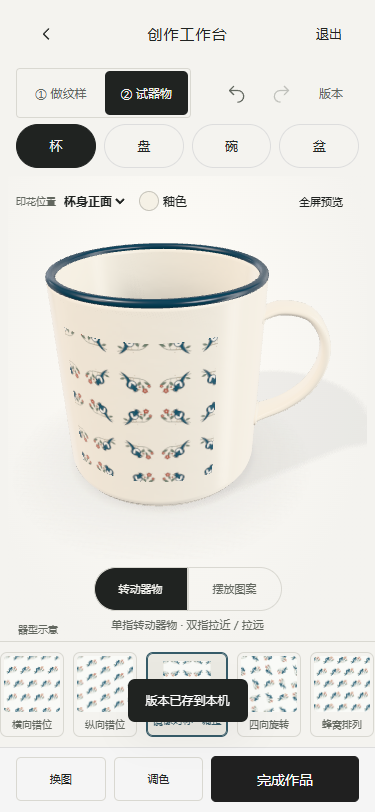
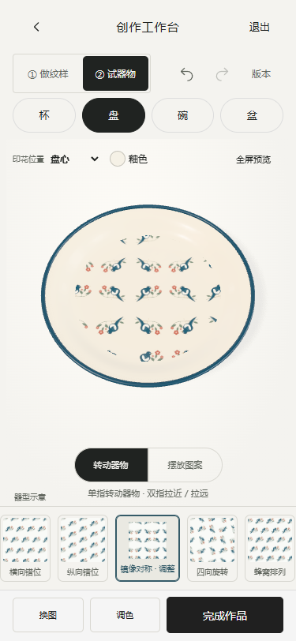

器型切换修复与材质检查
2026-10-30 · 仅本地修改，未发布
问题与修复
渲染器保存了可变草稿引用。切换器型先修改草稿，诊断函数随后读取到新名称，使工作台误判旧模型仍可复用。实际几何未切换。现在单独记录挂载时的器型，切换时重建模型；更新和截图流程都核对实际加载器型。诊断加入真实网格名称、几何 ID、包围盒和杯柄信息，避免仅验证按钮状态。
保留现有色调，调整釉面粗糙度、清漆反射、环境反射面和光照比例，纹样表面采用一致釉面参数；增加较淡的真实投影。模型仍是程序化示意，不是馆藏扫描，也未导入高精度实物模型。
实际修改文件
- source/cup3d.js：实际器型身份、更新/截图防护、材质与光照。
- prototype/cup3d.js、index.html、物之再生-H5-单文件.html：重新构建的产物。
- scripts/qa-vessel-reproduce.cjs：切换缺陷复现；scripts/qa-vessel-switch.cjs：真实几何回归测试。
- scripts/qa-round05-build.cjs：等待导航挂载后断言，修复初始化时序造成的测试误报。
- 本报告、对应测试结果和 previews/vessel-fixed-*.png 截图。
已执行的验证
- npm test：91/91；npm run lint、npm run build:cup、npm run build：通过。
- qa-vessel-switch.cjs：杯/盘/碗/盆真实模型 ID、几何 ID、杯柄和尺寸检查；同一草稿首次切换、快速连续切换、撤销重做、刷新、快照后切换均通过。同器型编辑保持模型身份。
- qa-mobile-focus.cjs：真实 CDP 触摸事件验证单指旋转、双指缩放、纹样位置/缩放/旋转、撤销重做和恢复；320/375/390/430px 无横向溢出，保存按钮未被遮挡；无页面异常。
- qa-round05-build.cjs：单文件应用的三导航与真实 3D 加载通过。首次运行因未等待异步导航挂载误报，补充等待后重新执行通过。
浏览器测试使用 Edge headless 手机模拟，非物理手机测试；尚未验证 Safari / 微信真机 GPU 和长时间性能。新一轮未接入外部 AI、云同步或正式馆藏资源。
375px 实际截图


实际模型验证结果 · 触摸回归结果 · 单文件冒烟测试
运行
在项目根目录设置 PORT=8879 后执行 npm start，打开 本地工作台。当前开发服务可访问；浏览器若显示旧模型，请刷新页面。
真实感依据：Three.js 物理材质文档说明清漆层与环境贴图的作用。不能仅凭参考视频判断其是否用了实物扫描或特定材质制作工具。